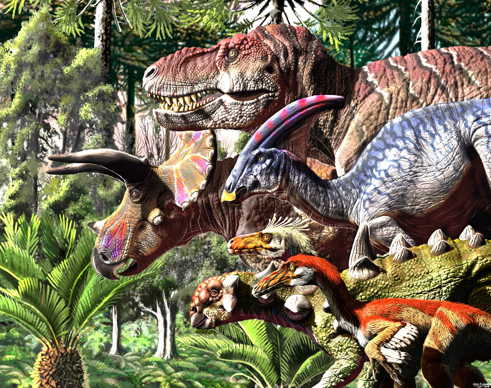
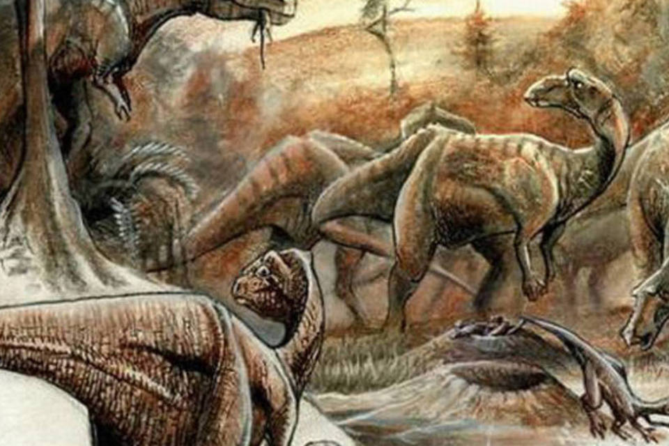

Noticias Cidades
Ciência
A desconhecida riqueza de fósseis de dinossauro na Índia
A Índia tem alguns dos fósseis mais espetaculares do planeta, desde vastos leitos de ovos de dinossauros até estranhas criaturas pré-históricas novas para a ciência.
A Índia abriga alguns dos fósseis mais espetaculares do mundo, que vão desde vastos leitos de ovos de dinossauro até estranhas criaturas pré-históricas desconhecidas da ciência. Mas muitos deles ainda aguardam no solo para que sejam estudados.
Em 2000, visitando o Museu Central de Nagpur, no oeste da Índia, o paleontólogo Jeffrey A. Wilson debruçou-se sobre um dos fósseis mais fascinantes que ele já tinha visto. Um dos seus colegas o havia escavado em 1984, na localidade de Dholi Dungri, em Gujarat, na costa oeste da Índia. "Foi a primeira vez em que os ossos de um bebê dinossauro e seus ovos foram encontrados juntos no mesmo fóssil", afirma Wilson, que é professor do Departamento de Ciências Geológicas da Universidade de Michigan, nos Estados Unidos.
Mas, para sua surpresa, havia algo mais. Segundo ele, "nesse fóssil, os ossos que eu estava examinando tinham duas pequenas vértebras com uma conexão especial - algo que só as cobras têm".
Para evitar qualquer possibilidade de erro de interpretação, Wilson procurou o mesmo padrão ao longo da coluna vertebral - e o encontrou, confirmando sua impressão inicial. "Foi como se uma lâmpada se acendesse na minha cabeça. Poderia haver também uma cobra pré-histórica nesse fóssil?"
Mas não havia nenhum lugar na Índia que pudesse fazer a limpeza profunda do fóssil que era necessária para o estudo. Wilson levou quatro anos para conseguir a aprovação da agência de Pesquisas Geológicas da Índia (GSI, na sigla em inglês) - o organismo governamental que fiscaliza as pesquisas geológicas em todo o país - para transportar o fóssil para os Estados Unidos.
Nos anos que se seguiram, cientistas, paleontólogos e especialistas em cobras dedicaram-se ao estudo do fóssil. Até que, em 2013, em conjunto com o paleontólogo indiano Dhananjay Mohabey e outros colegas da GSI, Wilson redigiu um estudo que descreve o momento incrivelmente cheio de ação capturado pelo fóssil.
Os autores não apenas confirmaram a presença de uma cobra pré-histórica, mas também descobriram que sua mandíbula estava totalmente aberta para comer o bebê dinossauro que havia acabado de nascer. Esse nascimento ocorreu ao lado de uma ninhada de ovos de dinossauro que ainda estavam inteiros.
O geólogo que estudou o projeto deduziu que os animais provavelmente haviam sido enterrados por um deslizamento de terra - um evento que teria começado rapidamente, sem aviso, capturando para sempre aquele momento vivido entre a presa e o predador.
E é assim que foi apresentada ao mundo da ciência a espécie Sanajeh indicus - nome derivado de "maravilha antiga da Índia", em sânscrito. Os cientistas observaram que as cobras pré-históricas não conseguiam abrir suas mandíbulas completamente para abocanhar presas grandes - uma capacidade adquirida por algumas cobras modernas ao longo do processo de evolução.
Em 2013, um fóssil similar foi descoberto naquele local e a mesma equipe agora prepara outro estudo que descreve como a anatomia do Sanajeh indicus relembra muito os lagartos modernos.
Os fósseis podem revelar segredos de um passado distante que não conheceríamos de outra forma. Mas, apesar das descobertas revolucionárias da ciência nos últimos anos, simplesmente não existe dinheiro suficiente, nem estudos sistemáticos do imenso patrimônio fóssil da Índia, segundo os paleontólogos.
"Acho que grande parte da herança de fósseis da Índia encontra-se inexplorada e foi esquecida", afirma Advait M. Jukar, paleontólogo de vertebrados da Universidade Yale e pesquisador do Departamento de Paleobiologia do Instituto Smithsonian em Washington, ambos nos Estados Unidos.
"A Índia produziu as primeiras baleias, alguns dos maiores rinocerontes e elefantes que já existiram, vastos leitos de ovos de dinossauro e estranhos répteis com chifres anteriores à era dos dinossauros. Mas existem muitas lacunas que ainda precisam ser preenchidas", segundo ele. E isso ocorre porque grandes partes da Índia não foram sistematicamente exploradas por paleontólogos profissionais.
Quebra-cabeças da evolução
Apesar disso, no decorrer dos anos, importantes descobertas paleontológicas na Índia ajudaram os cientistas a reunir informações fundamentais para desmistificar velhas teorias e lançar nova luz sobre a evolução da vida ao longo do tempo.
O paleontólogo pioneiro Ashok Sahni, cujo avô, pai e tio trabalharam no campo, está no centro de muitas dessas descobertas. Sahni muitas vezes financia suas expedições com recursos próprios - e sua própria coleção de fósseis preencheu as prateleiras do Museu de História Natural da Universidade de Punjab, na Índia.
Sahni se lembra de pesquisar cada centímetro de terra de um sítio de dinossauros no calor intenso da cidade de Jabalpur, no centro da Índia, em busca de fósseis, em 1982. Quando ele se abaixou para amarrar seus cadarços, encontrou na sua frente quatro ou cinco estruturas esféricas, com 16-20 cm de comprimento. "Eram estruturas muito desgastadas, redondas, quase todas do mesmo tamanho. Fiquei perplexo. Seriam ovos de dinossauro?"
Outro evento importante na evolução ocorreu quando mamíferos similares aos cervos que habitavam a terra evoluíram, tornando-se as baleias. Pesquisas revelaram que todas as baleias do mundo originaram-se nos leitos oceânicos da Índia e do Paquistão. "Conhecemos a aparência dessas primeiras baleias devido a descobertas feitas em Kutch [no Estado de Gujarat] e no norte da Índia e do Paquistão, mas não sabemos muito sobre a aparência dos seus precursores", explica Advait Jukar.
Estudar esses pedaços do passado também nos ajuda a entender como considerar o futuro e a medir o nível dos danos que estamos causando ao meio ambiente, segundo ele. "A maioria dos paleontólogos concorda, por exemplo, que a nossa espécie desempenhou papel dominante na extinção dos grandes mamíferos como o mamute em todo o mundo [durante a última Idade do Gelo]. Isso nos dá uma ideia de como muitas funções ecológicas, como a dispersão das sementes ou o transporte dos nutrientes, podem ter sido perdidas com essas extinções", afirma Jukar.
Registros de fósseis mais novos podem também ajudar a compreender onde as espécies costumavam viver antes que os seres humanos transformassem a paisagem - e podemos empregar essas informações em planos de conservação futura ou gestão da terra, segundo ele. "Sabemos que as mudanças climáticas causam movimentação das espécies para seus ambientes preferidos. Podemos usar as informações sobre onde os animais e as plantas viviam no passado para prever melhor os locais para onde eles poderão migrar em cenários de mudanças climáticas futuras", afirma Jukar.
Outras notícias do Brasil
-
Chuvas
O que as chuvas deste mês significam para os reservatórios e a conta de luz
-
Seca
Prejuízo com a seca nas lavouras sobe para R$ 25,6 bi e Paraná pede ajuda federal
-
Caminhões cegonha
DAF Caminhões Brasil começa a exportar veículos produzidos em Ponta
-
Fim do rodízio do PR
A Sanepar acertou ao decretar o fim do rodízio no abastecimento de água?